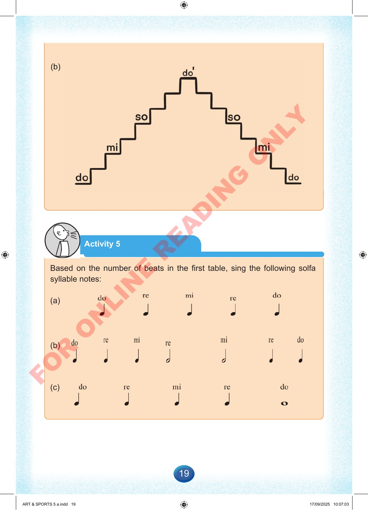

19
Activity
5
Based
on
the
number
of
beats
in
the
first
table,
sing
the
following
solfa
syllable
notes:
(a)
(b)
(c)
ART
&
SPORTS
5
a.indd
19
ART
&
SPORTS
5
a.indd
19
17/09/2025
10:07:03
17/09/2025
10:07:03
F
O
R
O
N
L
I
N
E
R
E
A
D
I
N
G
O
N
L
Y